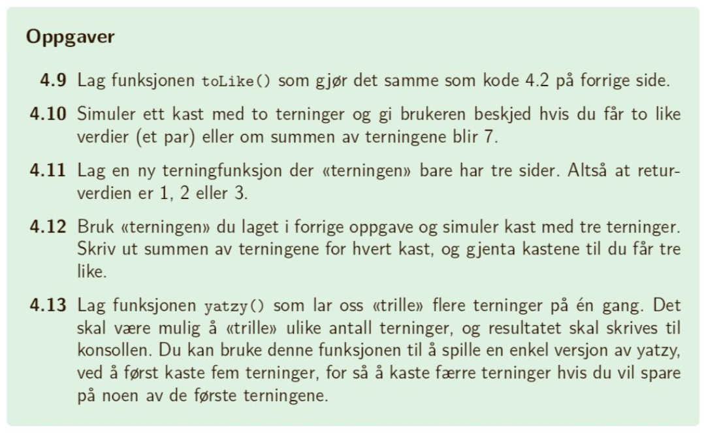

I en funksjon strukturerer vi kode til et lite program som kan tas i bruk flere ganger i koden.
Det finnes mange innebygde funskjoner i JavaScript, mens andre må vi lage selv. Eksempler på innebygde funksjoner er
Math.random()
toFixed()
document.write()
console.log()
Disse kaller vi ved å referere til selve funksjonsnavnet
På samme måte kaller vi egne funksjoner ved å referere til et navn vi gir funksjonen.
Når vi deklarerer nye funksjoner følger vi følgende struktur:
function funksjonsNavn(){
// kode som kjøres når funksjonen kalles
}
Deretter kan vi bruke funksjonen så mange ganger vi ønsker ved å referere til funksjonsnavnet:
funksjonsNavn();
Lag en funksjon som kaster en terning på nytt og på nytt til terningen viser 6 og som teller antall forsøk før suksess
// Funksjonen får navnet terningFunksjon:
function terningFunksjon(){
// Funksjonen skal først opprette en tellevariabel som teller antall forsøk. Denne settes til 0:
var teller = 0;
// Deretter opprettes en terningvariabel som vil vil inneholde terningens øyne. Denne får startverdi 0 for å sikre at datatypen er number
var terning = 0;
// Vi vet ikke hvor mange ganger vi må slå terningen for å få 6, derfor bruker vi en whileløkke som fortsetter så lenge terningen ikke viser 6.
while (terning != 6) {
// Hver gang whileløkken kjøres kastes terningen på nytt: et tall mellom 1 og 6.
terning = Math.floor(Math.random() * 6) + 1;
// Terningkastet logges (for nysgjerrighetens skyld)
console.log(terning);
// Og tellevariabelen økes med en
teller++;
// Deretter avsluttes whileløkken
}
// Og en beskjed til bruker skrives ut
document.write("< p >Det tok "+teller+" forsøk å få terningkast "+terning+"< /p >");
// Før funksjonen avsluttes
}
// For å ta i bruk funksjonen må den kalles:
terningFunksjon();
// Vi kan kalle funksjonen så mange ganger vi vil:
terningFunksjon();
terningFunksjon();
terningFunksjon();
Uten kommentarene underveis blir dette:
function terningFunksjon(){
var teller = 0;
var terning = 0;
while (terning != 6) {
terning = Math.floor(Math.random() * 6) + 1;
console.log(terning);
teller++;
}
document.write("< p >Det tok "+teller+" forsøk å få terningkast "+terning+"< /p >");
}
terningFunksjon();
Tenk etter:
Hvorfor får terningen verdi 0 før whileløkken og ikke et tilfeldig tall mellom 1 og 6 med en gang?
Av og til trenger funksjonen en beskjed fra bruker om "hvordan" den skal kjøres. F.eks. krever funksjonen toFixed() en beskjed om antall desimaler:
document.write(Math.PI.toFixed(1)+"< br >"+Math.PI.toFixed(2)+"< br >"+Math.PI.toFixed(10)+"< br >");
gir ulike resultater:
På samme måte kan vi lage funksjoner med argumenter. Disse argumentene representeres med symboler når funksjonen deklareres:
function funksjonsNavn(argument1, argument2, argument3){
// kode som kjøres når funksjonen kalles og tar i bruk argumentene
}
En funksjon kan ha flere argumenter, disse må ha ulike symboler. Når funksjonen kalles må argumentsymbolene erstattes med verdier:
funksjonsNavn(verdi1, verdi2, verdi3);
En funksjon som beregner areal og omkrets av en sirkel, der radiusen er argument.
< script >
function sirkel(r){
var areal = (Math.PI*r*r).toFixed(2);
var omkrets = (2*Math.PI*r).toFixed(2);
document.write('Arealet til en sirkel med radius '+r+' er '+areal+' og omkretsen er '+omkrets+'.');
}
sirkel(4);
sirkel(1);
sirkel(10);
< /script >
Normalt vil all kode i en funksjon kjøre når funksjonen kalles. Av og til ønsker vi at funksjonen skal stoppe dersom et spesielt tilfelle og av og til ønsker vi at funksjonen skal returnere én bestemt verdi
Til dette bruker vi kodeordet return
I det vi kommer til dette kodeordet vil ikke resten av koden i funksjonen leses. Dersom return får en verdi som argument: return(verdi) vil denne verdien lagres til funksjonsnavnet og lagres i en variabel ved
var variabel = funksjonsNavn(verdi)
En viktig egenskap med å bruke return, er at funksjonen automatisk avsluttes her. All kode i funksjonen som ligger etter return, vil ikke bli lest, og tar dermed ikke opp unødvendig kapasitet for maskinen. Dette kan brukes i kombinasjon med if-else-setninger.
Lag et tilfeldig tall mellom 10 og 20 (med tilfeldig-funksjonen!) og sjekk om det er et partall. Partall skal returne true, mens oddetall skal returnere false.
function sjekkPartall(min, max){
var tilfeldig = tilfeldigTall(min, max);
document.write(tilfeldig + '< br >');
if (tilfeldig % 2 == 0){
return true;
}
return false; // trenger ingen else
}
if(sjekkPartall(10, 20) == 1){
document.write('tallet er et partall');
}
else{
document.write('tallet er et oddetall');
}
Oppgave 4.9 - 4. 13 på side 67
